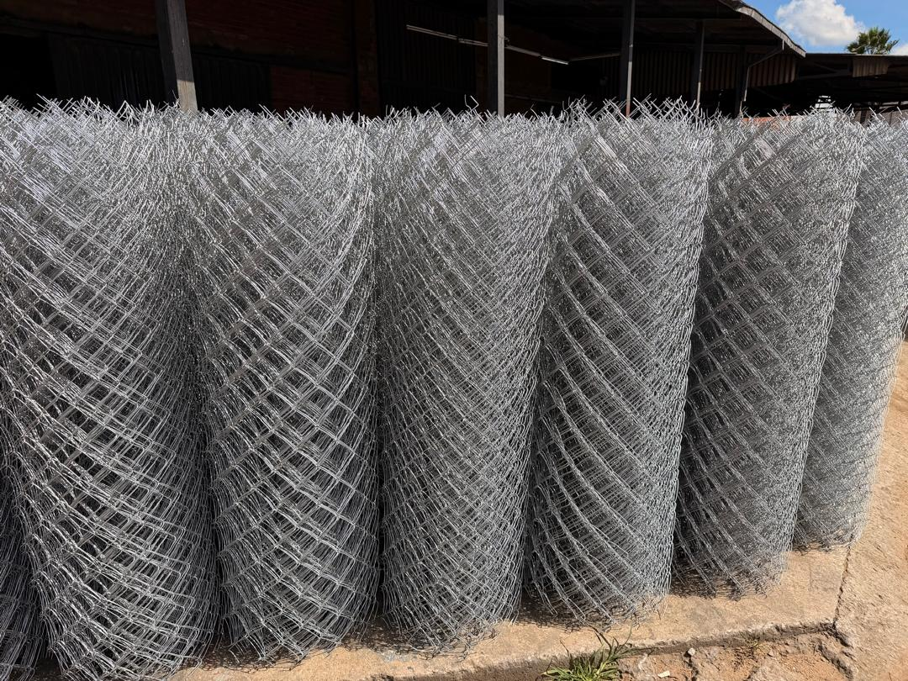
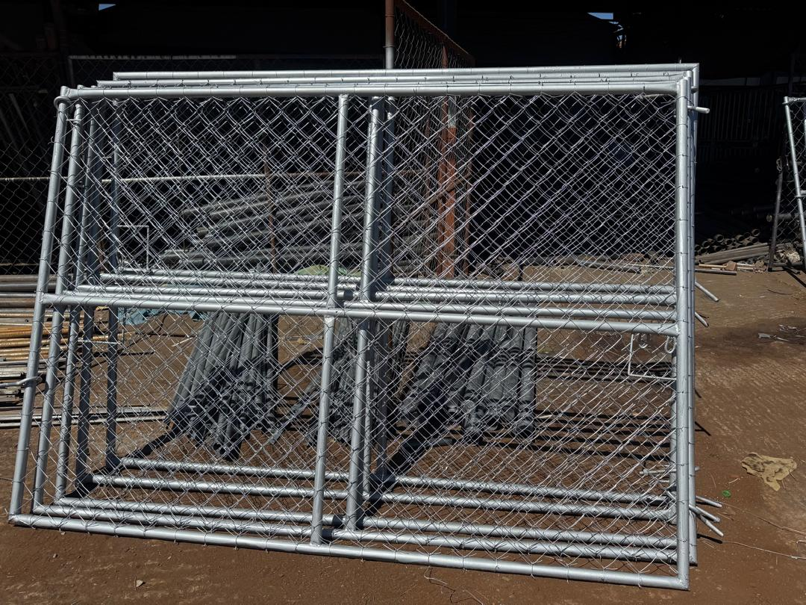
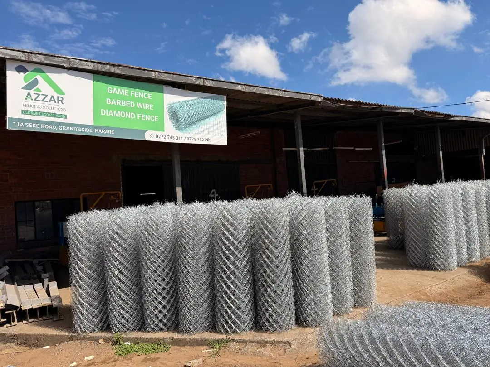

Made, Stocked & Installed
Real Azzar Diamond Mesh
From manufactured rolls at our yard to tensioned fence lines and matching gates on site.



Versatile Chain-Link Fencing

Galvanised diamond mesh chain-link fencing in multiple heights for residential, agricultural, and industrial properties.
From manufactured rolls at our yard to tensioned fence lines and matching gates on site.


Secure homes, gardens, and estates with professional fencing tailored to your boundary requirements.
Protect business premises, warehouses, and commercial land with durable perimeter solutions.
Heavy-duty perimeter protection for factories, depots, and industrial operations.
Define and secure farm boundaries, livestock areas, and rural properties.
Safe and visible perimeter fencing for schools, clinics, and government facilities.
High-security perimeter solutions for mining operations and solar installations.
Diamond mesh, also known as chain-link fencing, is one of the most widely used fences in Zimbabwe. Galvanised wire is woven into a diamond pattern and tensioned between posts to create a strong, see-through boundary that works on homes, farms, schools, factories and open land.
Azzar manufactures diamond mesh rolls at our yard in Harare, fabricates matching gates and offers either supply only or full installation. For extra security, diamond mesh can be topped with barbed wire or razor wire.
Usually one of the most cost-effective ways to fence a long boundary.
Follows slopes and uneven ground better than rigid panels.
Galvanised wire helps the fence resist rust for outdoor use.
Rolls are manufactured at our Harare yard, so supply is easier to plan.
Single and double-leaf gates are fabricated by Azzar for the same fence line.
Add barbed wire, razor wire or electric strands when you need more security.
Both fences are see-through and galvanised. The right choice depends on your security needs, site and budget.
| Diamond mesh | Clearview | |
|---|---|---|
| Best for | General boundaries, farms, gardens, yards | Schools, businesses and high-security sites |
| Climb resistance | Moderate, improved with a topping | High, thanks to small rigid apertures |
| Appearance | Practical and traditional | Neat, modern panels |
| Uneven ground | Follows slopes well | Needs stepping on steep slopes |
| Budget | Usually more economical | Higher investment |